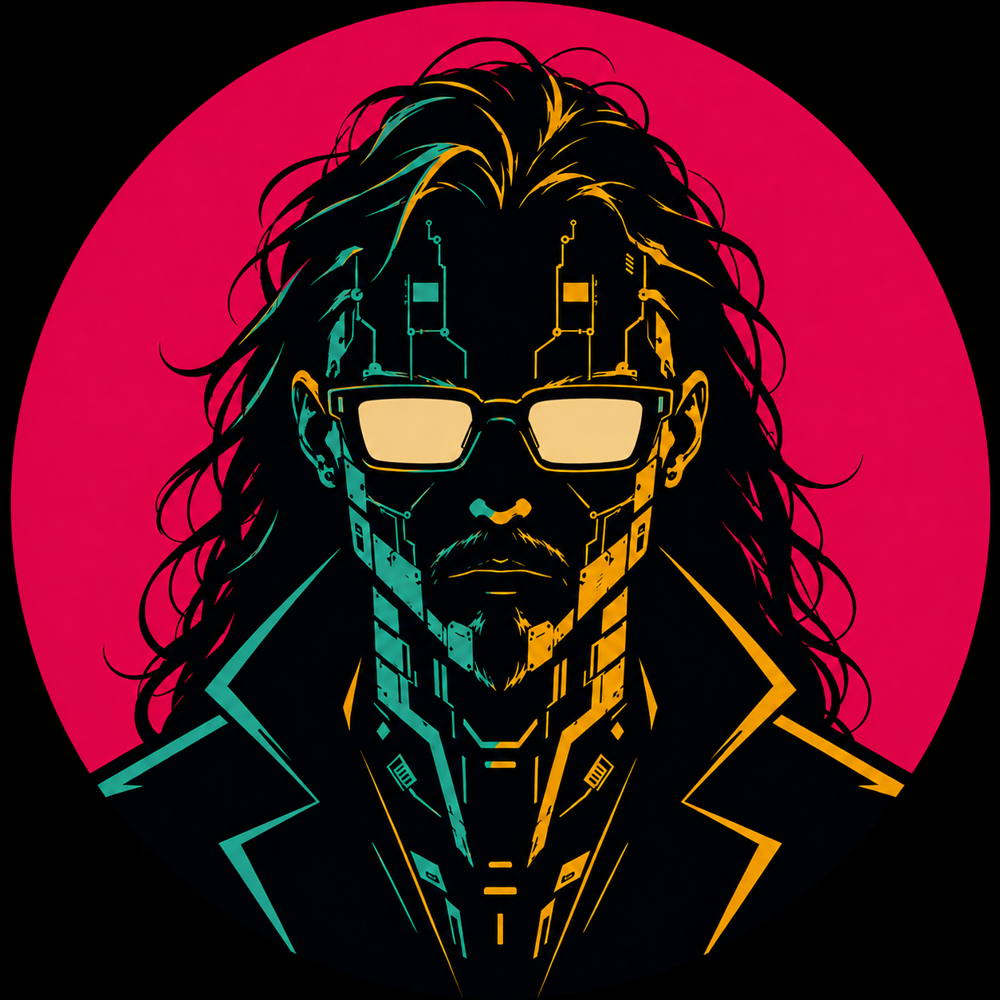

Heroes of Arbarea
GameAn idle autobattler with a party of heroes.
Independent developer / creative work
Web apps, games, and experiments.
Explore projects
An idle autobattler with a party of heroes.
A radio-host experiment with multiple personas.
A starting point for full-stack TypeScript projects.
Scroll or use the arrows to explore.
Background
Software development, game systems, and creative experiments.
Your role · Dates
Replace this entry with your experience, responsibilities, and a concrete outcome.